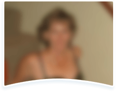

De ce cistita revine mereu după tratament — și ce a schimbat totul pentru Paulina, 47 de ani
Medicul ei i-a spus ceva ce niciun alt doctor nu îi explicase în 4 ani. Și asta a făcut toată diferența.

Paulina Rudariu, 47 de ani, a intrat în cabinetul meu în septembrie 2024 cu un dosar medical gros cât un roman. Patru ani de consulturi, tratamente, speranțe și dezamăgiri.
Când s-a așezat, primul lucru pe care l-a spus a fost: „Nu mai știu ce să fac. Am încercat tot și tot revine."
O ascultam și recunoșteam povestea — o aud de cel puțin trei ori pe săptămână.
„Am renunțat la tot ce îmi plăcea. Degeaba."
I-am cerut să îmi spună tot ce a încercat. A scos un bilețel din poșetă — scrisese dinainte, ca să nu uite nimic:
- 6 serii de antibiotice în 4 ani — de fiecare dată revenea după 3-4 săptămâni
- 3 luni de ceaiuri din merișor — „n-am simțit nicio diferență"
- Suplimente naturale din farmacie — efect 2-3 săptămâni, apoi totul ca înainte
- A renunțat la cafea, vin, condimente, ciocolată — „și tot nu a ajutat"
- Probiotice recomandate de o prietenă — 2 luni, fără rezultat durabil
- Proceduri recomandate de specialist — neplăcute și cu efect scurt
- Plante medicinale aduse din Germania de o cunoștință — zero efect
„Am cheltuit mii de lei. Am renunțat la tot ce îmi plăcea. M-am trezit noaptea de câte 3-4 ori. Mi-a fost rușine la serviciu. Și tot revenea."
Ce îi explicam eu Paulinei — și ce nu i-a spus nimeni în 4 ani
I-am desenat pe o foaie o imagine simplă. Imaginați-vă un zid de cărămidă.
Vezica urinară sănătoasă are un astfel de zid — un strat protector care împiedică bacteriile să se prindă de pereți. Antibioticele distrug bacteriile care au trecut deja zidul. Dar zidul în sine rămâne spart.
La Paulina, după ani de tratamente repetate, zidul era atât de subțire încât orice bacterie intra fără rezistență. De aceea revenea mereu — nu pentru că tratamentele erau proaste, ci pentru că nimeni nu repara zidul.

Ce i-am recomandat Paulinei
Sunt prudent cu suplimentele. Nu recomand nimic dacă nu am văzut rezultate reale la pacientele mele.
În ultimul an urmărisem cu atenție un preparat pe bază de 40+ extracte vegetale — Cystiolla. Mai multe colege îl recomandaseră și îmi raportaseră că pacientele lor se simțeau mai bine. Nu ca publicitate — ci ca observație clinică.
Mecanismul care m-a convins: Cystiolla nu acționează doar asupra simptomelor. Susține refacerea stratului protector al vezicii și întărește imunitatea locală — exact ce lipsea în cazul Paulinei. Peste 15.436 de femei din România l-au încercat deja.

Livrare cu plată la curier · Fără rețetă
Ce s-a întâmplat cu Paulina
I-am cerut să îmi scrie după două săptămâni. Mesajul a venit în ziua 14, seara:
Senzația de presiune din abdomenul inferior s-a redus. „Prima seară mai liniștită de mult."
Prima noapte în care nu s-a trezit. „Nu îmi venea să cred. M-am uitat la ceas de trei ori."
Urgența urinară s-a redus semnificativ. A mers la cumpărături 4 ore fără anxietate. „Mă simt o altă persoană."
Simptomele s-au ameliorat considerabil. „Nu mai calculez distanța până la toaletă înainte să ies din casă."
Paulina m-a sunat luna trecută. Se simte bine, fără episoade recurente. „Sunt liberă, în sfârșit."
De ce recomand Cystiolla
- Nu afectează flora intestinală — spre deosebire de antibiotice repetate
- Poate fi folosit preventiv, fără riscuri
- Acțiune dublă: ameliorarea simptomelor + susținerea imunității locale
- Primele rezultate observate din ziua 1 la majoritatea pacientelor
- Peste 15.436 femei din România l-au încercat cu rezultate pozitive
✓ Plată la livrare · ✓ Livrare rapidă în România · ✓ Fără rețetă
Comentarii 63

Doamne, eu parcă citesc povestea mea. 3 ani și tot același cerc. Am comandat acum. Sper din tot sufletul 🙏
❤️ 52Eu am Cystiolla de 6 săptămâni. Nici un episod. Înainte aveam aproape în fiecare lună. Recomand cu toată inima!
❤️ 91Eram sceptică sincer, dar după ce am citit articolul am comandat. Am să revin cu feedback după 2 săptămâni.
❤️ 29Am 51 de ani și credeam că asta e viața mea de acum. Mă bucur că am dat peste articolul ăsta. A doua lună cu Cystiolla și mă simt mult mai bine.
❤️ 68Am încercat tot ce scrie în articol — ceaiuri, suplimente, regim. Cystiolla e primul lucru care a dat rezultate pe termen mai lung. Sunt în luna 3.
❤️ 44Soțul meu zice că sunt o altă persoană 😂 Nu mai sunt stresată, nu mai fug la baie, pot ieși din casă liniștită. Mulțumesc pentru articol!
❤️ 55✓ Plată la livrare · ✓ Livrare în România